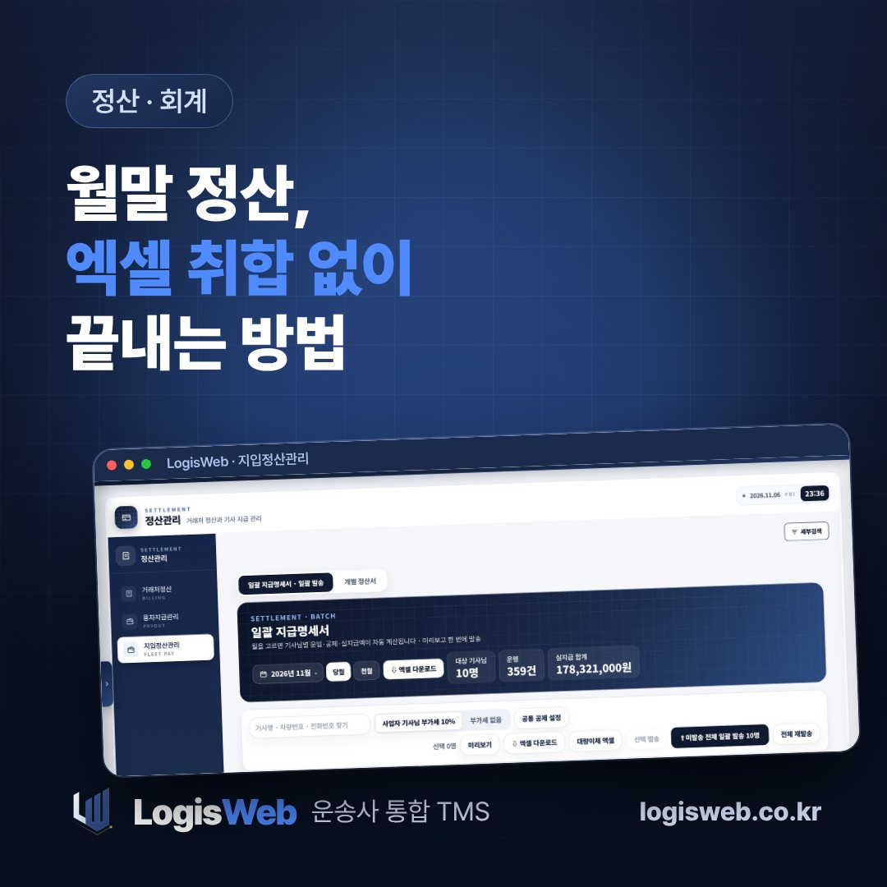

네이버 블로그 올리는 법 ① 제목 칸에 아래 제목 복사 ② 이 노란 상자 아래 본문을 드래그 → 복사 → 붙여넣기 ③ 그림 자리에 같은 폴더의 card-1~3.jpg 를 끌어다 놓기 ④ 태그 칸에 태그 붙여넣기 ⑤ 발행 제목: 운송사 월말 정산, 엑셀 취합 없이 끝내는 방법 (거래처 청구 · 기사 지급) 태그: #운송사정산 #화물정산 #지입정산 #거래명세서 #지급명세서 #운송관리시스템 #로지스웹
운송사 월말 정산, 엑셀 취합 없이 끝내는 방법 (거래처 청구 · 기사 지급)

월말 정산, 엑셀 취합 없이
월말이 되면 배차실 모니터에 엑셀 창이 몇 개씩 떠 있죠. 거래처별 청구 파일, 기사 지급 파일, 매출 집계 파일… 그리고 어느 순간 파일 이름이 "최종_진짜최종"이 돼요.
정산이 힘든 이유는 단순해요. 배차할 때 이미 넣은 운임을, 정산할 때 다시 모으기 때문이에요.
배차할 때 넣은 운임이 그대로 정산이 돼요
로지스웹은 처음부터 데이터가 한 줄로 이어지게 만들었어요.
오더 → 배차 → 관제 → 인수증 → 정산 → 매출
배차할 때 넣은 청구운임 · 기사운임 · 수수료가 그대로 거래처 청구와 기사 지급, 회계 장부로 넘어가요. 월말에 다시 모을 게 없어요.